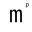

Favicon
Created:
Quick Start
- Copy theme icons to your site:
cp themes/zola-monoplain/static/{icon.svg,icon.png,favicon.ico} static/ - Edit
static/icon.svgto customize your design - Regenerate PNG and ICO files (see below)
These files override the theme's default static files. Zola copies your static/ directory contents to the output, replacing theme files with the same names.
What Is Included in the Theme?
The theme includes three favicon files in the static directory:
| File | Description | Image |
|---|---|---|
icon.svg | An SVG image used as the favicon for modern browsers that support SVG favicons. | |
icon.png | A 32x32 PNG image used as the favicon for most browsers. |  |
favicon.ico | A traditional ICO file used as a fallback for older browsers. It is generated from the icon.png file. |
How Favicons Work
Browsers look for favicon files in several locations:
- HTML link tags: Specified in the
<head>section of your HTML - Root directory:
/favicon.ico(traditional location)
The zola-monoplain theme uses HTML link tags in the head template to reference favicon files, allowing for maximum compatibility and flexibility.
As fallback for older browsers, it also includes a reference to /favicon.ico in the root directory.
The current theme uses the following link tags in the <head> section of your HTML:
<link
rel="icon"
href="{{ get_url(path='icon.svg', trailing_slash=false)|safe }}"
sizes="32x32"
type="image/svg+xml"
/>
<link
rel="icon"
href="{{ get_url(path='icon.png', trailing_slash=false)|safe }}"
sizes="32x32"
type="image/png"
/>
<link
rel="icon"
href="{{ get_url(path='favicon.ico', trailing_slash=false)|safe }}"
sizes="32x32"
type="image/ico"
/>Customize the Icons
To add or change the favicon, copy the existing files from the theme's static directory into your site's static directory. You can then edit the files in place or replace them with your own.
1. Copy Icon Files from the Theme
cp themes/zola-monoplain/static/icon.png static/icon.png
cp themes/zola-monoplain/static/icon.svg static/icon.svg
cp themes/zola-monoplain/static/favicon.ico static/favicon.ico2. Customize the Files
If the copy was successful, your site's directory structure should look like this:
your-site/
├── config.toml
├── content/
└── static/
├── favicon.ico
├── icon.png
└── icon.svgThe icon.svg file is also the template for the icon.png file, which is generated from the SVG file using Inkscape or ImageMagick's convert command.
The icon.svg file is a simple SVG file that contains a single letter "m" in a monospace font. You can edit the SVG file to change the letter, font, color, or other properties.
<svg xmlns="http://www.w3.org/2000/svg" viewBox="0 0 512 512">
<style>
:root {
color-scheme: light dark;
}
@media (prefers-color-scheme: dark) {
text { fill: white; }
rect { fill: black; }
}
@media (prefers-color-scheme: light) {
text { fill: black; }
rect { fill: white; }
}
text {
text-anchor: middle;
dominant-baseline: middle;
font-family: "IBM Plex Mono", Menlo, "DejaVu Sans Mono", "Bitstream Vera Sans Mono", Consolas,
"Lucida Console", Monaco, monospace;
font-size: 32em;
}
text + text {
font-size: 8em;
}
</style>
<rect width="100%" height="100%" />
<text x="50%" y="50%">m</text>
<text x="85%" y="15%">ρ</text>
</svg>After editing the SVG file, you can generate a new PNG file using Inkscape or ImageMagick's convert command.
Here is an example of how to generate the PNG and ICO files from the SVG file using Inkscape and ImageMagick:
cd your-site/static
inkscape ./icon.svg --export-width=32 --export-filename="./tmp.png"
convert ./tmp.png -resize 32x32 ./favicon.ico
convert ./tmp.png -resize 32x32 ./icon.pngIf you want to have transparent background for the PNG file, you can use the following command:
convert ./tmp.png -resize 32x32 -background none ./icon.pngOnce you have generated the new PNG and ICO files, you can delete the temporary PNG file:
rm ./tmp.pngNote: If you have problems with the background color of the PNG file, you can remove the @media (prefers-color-scheme: dark) and @media (prefers-color-scheme: light) sections from the SVG file. This will make the background color of the PNG file transparent.
Or set color and background color explicitly for the <text> and <rect> elements in the SVG file.
Further Reading
Feedback
Have thoughts or experiences you'd like to share? I'd love to hear from you! Whether you agree, disagree, or have a different perspective, your feedback is always welcome. Drop me an email and let's start a conversation.